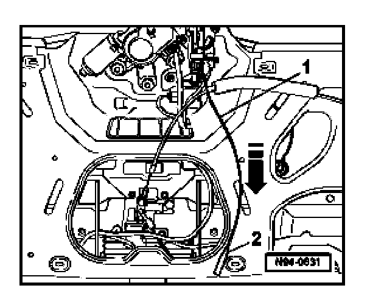

Rear Window, Emergency Release
Rear Window, Emergency Release
If the voltage supply in vehicle is interrupted or the Rear Window Opening Button -E361- is malfunctioning, the rear window can be opened by operating the emergency release.
- Remove lower rear lid trim.

- Separate release cable -1- from fastening -2-.
- Pull release cable -1- in direction of -arrow-.
The rear window opens.